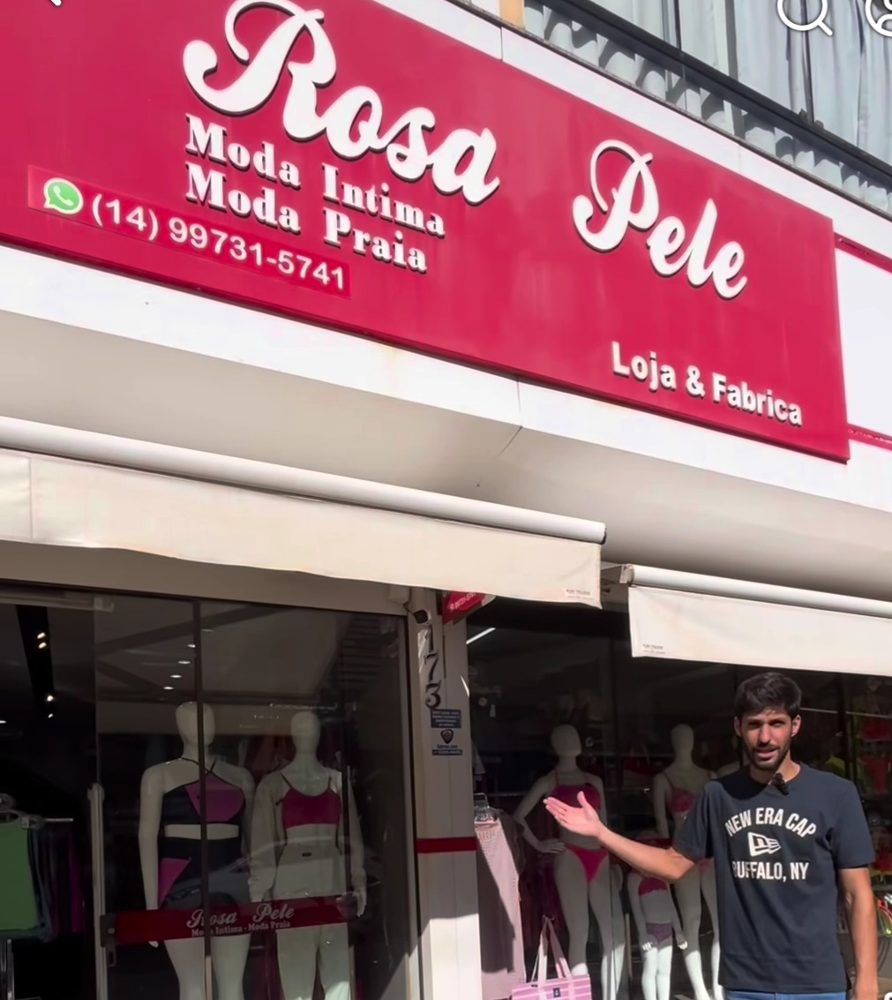
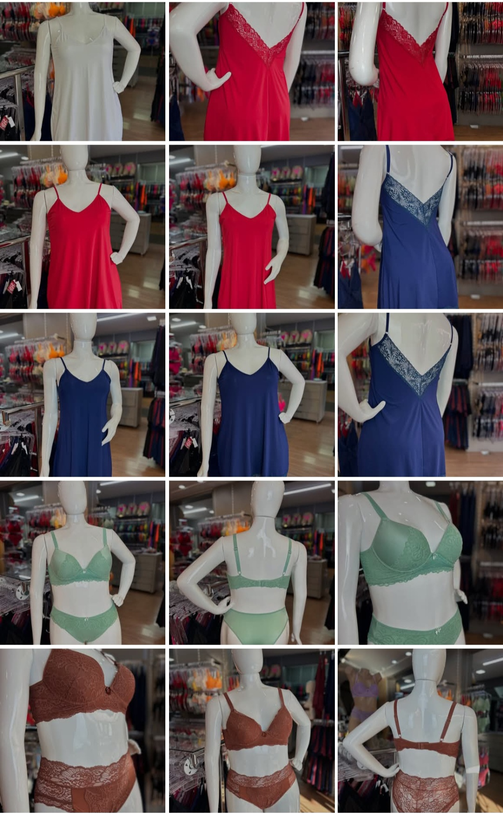
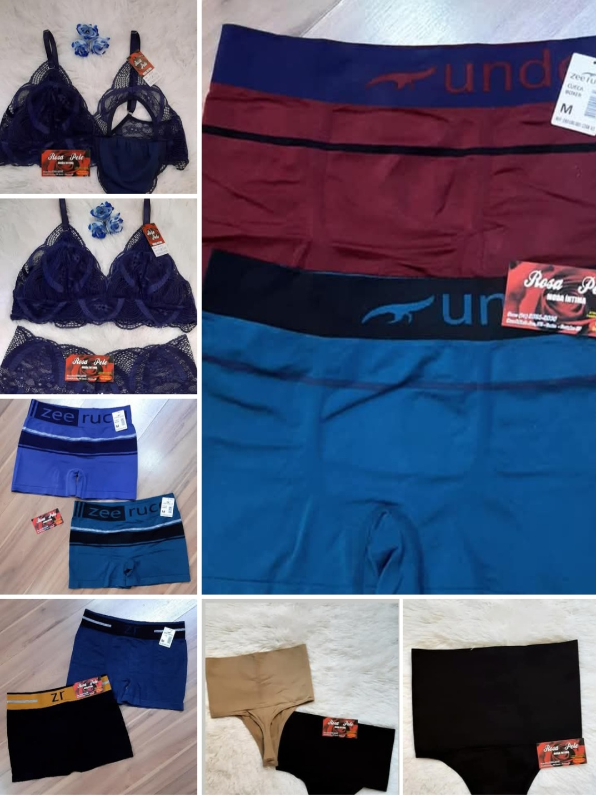
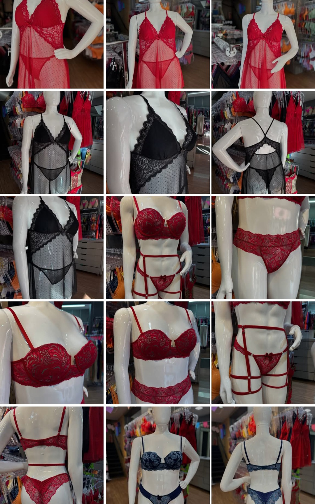

Loja & Fábrica • Ourinhos - SP
A Rosa Pele é referência em Ourinhos no segmento de moda praia, moda íntima e moda fitness, oferecendo peças que unem conforto, estilo, qualidade e excelente acabamento.
Atuando como loja e fábrica, a marca se destaca pela variedade de produtos e pela atenção aos detalhes, atendendo diferentes perfis e necessidades com opções para o público feminino, masculino e maternidade.
Com peças pensadas para valorizar o bem-estar, a beleza e a autoestima, a Rosa Pele oferece coleções que acompanham o dia a dia, o lazer e os momentos especiais com charme, praticidade e qualidade.
Seja para praia, rotina, conforto ou atividade física, a Rosa Pele entrega moda com personalidade e cuidado em cada detalhe.
Endereço: Rua Arlindo Luz, 173 - Centro
Cidade: Ourinhos - SP
Falar no WhatsApp Ligar✔ Moda praia ✔ Moda íntima ✔ Moda fitness ✔ Biquínis ✔ Linha maternidade ✔ Moda masculina ✔ Moda feminina ✔ Peças com conforto, estilo e qualidade



